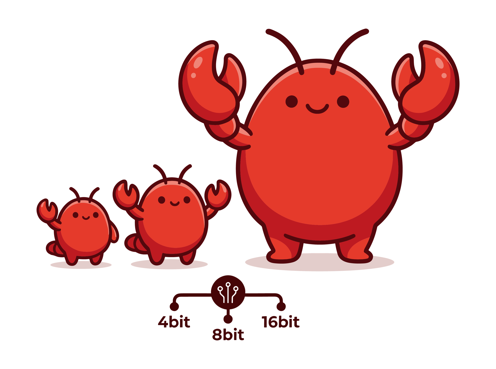
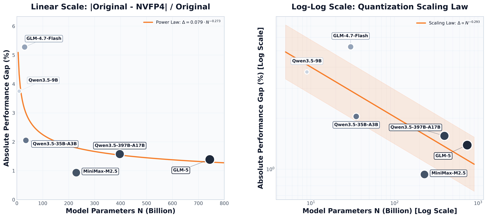
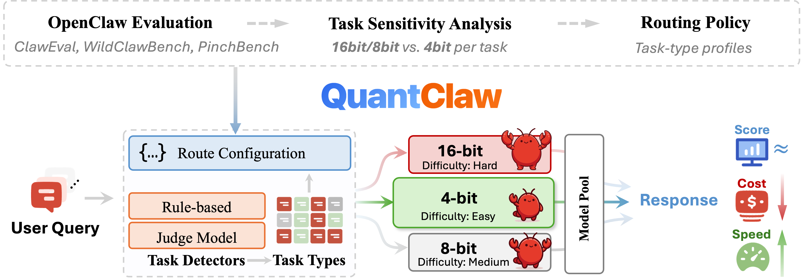
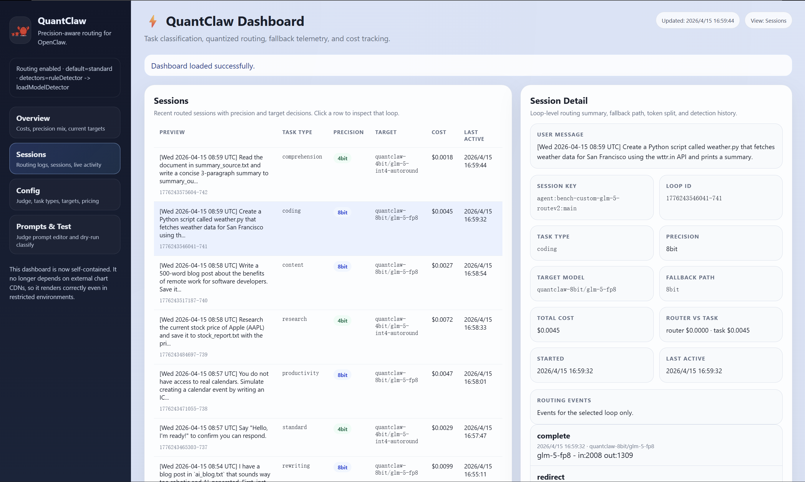
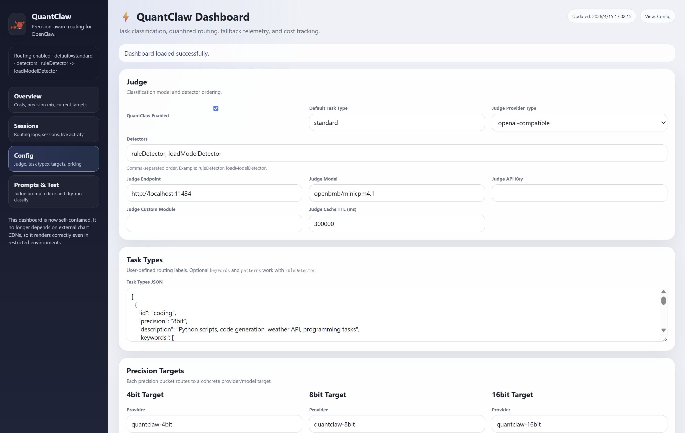
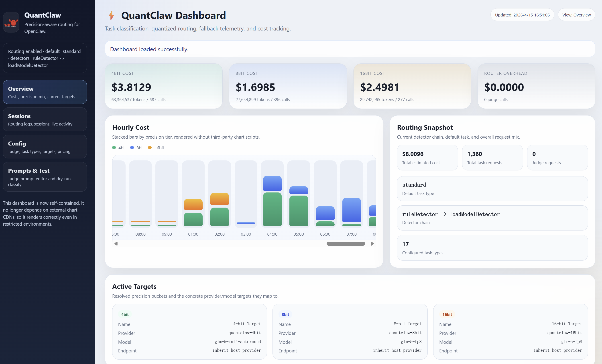

Not every query needs a supercomputer. We benchmarked model quantization across OpenClaw's full task spectrum and developed a router plugin that sends each query exactly where it belongs. Cut costs by 20%, speed up 10% without sacrificing capabilities.
OpenClaw has emerged as one of the hottest open-source AI assistant projects of 2026. By combining large language models with browser control, Shell execution, memory, and automation tools, it turns the AI assistant from a chatbot into an agent that can actually do things. That combination of autonomy and usability is exactly why OpenClaw has attracted so much attention: it promises not just to answer questions, but to complete real workflows on the user’s behalf.
However, this capability comes at a steep token cost. Even a seemingly simple query can trigger far more than a single response, as OpenClaw often has to carry long system prompts, conversation history, tool outputs, and multi-step reasoning into each API call. In practice, users are paying not only for the answer itself, but for the overhead of running a full agent system.
Model quantization can make models cheaper and faster to run. By reducing numerical precision from 32-bit floats down to 4-bits or even 2-bits, quantization can dramatically shrink memory footprint and compute. However, the effect of quantization on agentic tasks is unclear. This motivates us to explore the following questions:
(1) How does quantization affect OpenClaw overall?
(2) How does its impact vary across different task types?
(3) How much cost can we actually save and how much speedup can we achieve in practice through quantization?
To comprehensively understand how quantization affects OpenClaw's performance, we conducted an extensive study using Claw-Eval (release v0.0.0) which spans 24 distinct task types, 104 tasks, and 6 models at scales ranging from 9B to 744B. Each task was executed over 6 independent trials and evaluated via LLM judge and automated metrics across both BF16/FP8 (high-precision) and NVFP4 (quantized) configurations.
| Models | Parameters (B) | BF16/FP8 Score | NVFP4 Score |
|---|---|---|---|
| GLM-4.7-Flash | 30 | 0.6370 | 0.6034 |
| GLM-5 | 744 | 0.7130 | 0.7229 |
| MiniMax-M2.5 | 229 | 0.6760 | 0.6823 |
| Qwen3.5-9B | 9 | 0.4267 | 0.4107 |
| Qwen3.5-35B-A3B | 35 | 0.6686 | 0.6549 |
| Qwen3.5-397B-A17B | 397 | 0.7048 | 0.6937 |
Quantization degradation exhibits a power-type scaling behavior with model size. Our sweep across 9B-744B models shows that smaller models (<30B) experience 3-5% performance degradation under NVFP4 quantization, whereas large models (200B+) degrade by less than 2%, and in some cases even achieve slight performance gains (+0.9% to +1.4%).

Based on the experimental results, we divide different task types into three levels: 🔴 High Sensitivity, 🟢 Low Sensitivity and 🟡 Moderate Sensitivity.
These tasks suffer significant performance degradation with quantization, requiring BF16/FP8 precision for reliable execution:
| Task Category | Score Gain (BF16/FP8-NVFP4) |
|---|---|
| 💻 Coding | +12.27% |
| 📋 Compliance | +8.73% |
| 🖥️ Terminal | +6.69% |
| 🛡️ Safety | +6.50% |
| 🧩 Synthesis | +6.39% |
| 🔄 Workflow | +6.15% |
| 📂 Organization | +3.57% |
| ⚙️ Operations | +2.67% |
| 🔐 Security | +2.42% |
These tasks maintain or improve performance with NVFP4 quantization across model scales:
| Task Category | Score Gain (BF16/FP8-NVFP4) |
|---|---|
| 🔬 Research | -2.64% |
| 🖼️ Multimodal | -2.71% |
| 📖 Comprehension | -4.02% |
| 📚 Knowledge | -6.29% |
| 📝 Office QA | -6.84% |
| 📊 Data Analysis | -10.06% |
These tasks exhibit variable quantization tolerance:
| Task Category | Score Gain (BF16/FP8-NVFP4) |
|---|---|
| ✍️ Rewriting | +1.37% |
| 📁 File_ops | +1.34% |
| 💰 Finance | +1.17% |
| 📰 Content | +0.83% |
| 🛒 Procurement | +0.73% |
| ✅ Productivity | +0.63% |
| 🛠️ Ops | +0.50% |
| 🧠 Memory | 0.00% |
| ✉️ Communication | -0.48% |
Based on the task sensitivity analysis and observed tradeoffs between score, speed, and cost, we derive a deployment guideline for choosing between BF16/FP8 and NVFP4 quantization along three optimization targets:
Click the tabs to switch views.
| Rank | Task Category | Preferred Precision | Speed Δ (BF16-NVFP4) | Score Δ (BF16-NVFP4) |
|---|---|---|---|---|
| 1 | 💻 Coding | BF16/FP8 | +13.58% | +12.27% |
| 2 | 📋 Compliance | BF16/FP8 | +7.32% | +8.73% |
| 3 | 🖥️ Terminal | BF16/FP8 | +16.66% | +6.69% |
| 4 | 🛡️ Safety | BF16/FP8 | -9.12% | +6.50% |
| 5 | 🧩 Synthesis | BF16/FP8 | -4.88% | +6.39% |
| 6 | 🔄 Workflow | BF16/FP8 | -13.64% | +6.15% |
| 7 | 📂 Organization | BF16/FP8 | +1.42% | +3.57% |
| 8 | ⚙️ Operations | BF16/FP8 | -3.07% | +2.67% |
| 9 | 🔐 Security | BF16/FP8 | -17.38% | +2.42% |
| 10 | ✍️ Rewriting | BF16/FP8 | +0.32% | +1.37% |
| 11 | 📁 File_ops | BF16/FP8 | +9.96% | +1.34% |
| 12 | 💰 Finance | BF16/FP8 | +6.79% | +1.17% |
| 13 | 📰 Content | BF16/FP8 | -5.08% | +0.83% |
| 14 | 🛒 Procurement | BF16/FP8 | -12.13% | +0.73% |
| 15 | ✅ Productivity | BF16/FP8 | +2.62% | +0.63% |
| 16 | 🛠️ Ops | BF16/FP8 | -1.26% | +0.50% |
| 17 | 🧠 Memory | BF16/FP8 | +33.86% | 0.00% |
| 18 | ✉️ Communication | NVFP4 | -14.30% | -0.48% |
| 19 | 🔬 Research | NVFP4 | -26.09% | -2.64% |
| 20 | 🖼️ Multimodal | NVFP4 | +46.88% | -2.71% |
| 21 | 📖 Comprehension | NVFP4 | +7.69% | -4.02% |
| 22 | 📚 Knowledge | NVFP4 | -0.01% | -6.29% |
| 23 | 📝 Office QA | NVFP4 | -4.41% | -6.84% |
| 24 | 📊 Data Analysis | NVFP4 | +0.75% | -10.06% |
| Rank | Task Category | Preferred Precision | Cost Δ (BF16-NVFP4) | Score Δ (BF16-NVFP4) |
|---|---|---|---|---|
| 1 | 💻 Coding | BF16/FP8 | -30.58% | +12.27% |
| 2 | 📋 Compliance | BF16/FP8 | -0.68% | +8.73% |
| 3 | 🖥️ Terminal | BF16/FP8 | +30.56% | +6.69% |
| 4 | 🛡️ Safety | BF16/FP8 | +17.94% | +6.50% |
| 5 | 🧩 Synthesis | BF16/FP8 | +11.82% | +6.39% |
| 6 | 🔄 Workflow | BF16/FP8 | +7.55% | +6.15% |
| 7 | 📂 Organization | BF16/FP8 | +24.82% | +3.57% |
| 8 | ⚙️ Operations | BF16/FP8 | +17.83% | +2.67% |
| 9 | 🔐 Security | BF16/FP8 | +5.79% | +2.42% |
| 10 | ✍️ Rewriting | BF16/FP8 | +24.97% | +1.37% |
| 11 | 📁 File_ops | BF16/FP8 | +20.66% | +1.34% |
| 12 | 💰 Finance | BF16/FP8 | +13.89% | +1.17% |
| 13 | 🛒 Procurement | BF16/FP8 | -2.46% | +0.73% |
| 14 | 📰 Content | NVFP4 | +19.22% | +0.83% |
| 15 | ✅ Productivity | NVFP4 | +25.40% | +0.63% |
| 16 | 🛠️ Ops | NVFP4 | +13.23% | +0.50% |
| 17 | 🧠 Memory | NVFP4 | +15.70% | 0.00% |
| 18 | ✉️ Communication | NVFP4 | +19.22% | -0.48% |
| 19 | 🔬 Research | NVFP4 | +3.87% | -2.64% |
| 20 | 🖼️ Multimodal | NVFP4 | -1.92% | -2.71% |
| 21 | 📖 Comprehension | NVFP4 | -0.56% | -2.71% |
| 22 | 📚 Knowledge | NVFP4 | +15.29% | -6.29% |
| 23 | 📝 Office QA | NVFP4 | +25.77% | -6.84% |
| 24 | 📊 Data Analysis | NVFP4 | +13.59% | -10.06% |

QuantClaw is a plug-and-play task-type routing quantization plugin designed for OpenClaw. It enables model precision switching based on task type for user-submitted queries, striking an effective balance between quality, efficiency, and cost. QuantClaw features automatic adaptation, intelligent routing, full customizability, and built-in observability.
Given a user query, QuantClaw automatically determines the most suitable routing path without requiring the user to manually choose precision. It currently supports ordered detectors, including ruleDetector and loadModelDetector. In a typical workflow, ruleDetector first attempts to classify the query using predefined keywords, patterns, and task-type descriptions. If no reliable match is found, loadModelDetector invokes a judge model to identify the most appropriate task type. This allows QuantClaw to adapt dynamically to both explicit and ambiguous user intents.
[ User Query ]
|
v
[ ruleDetector: keywords / patterns / task hints ] --> [ Rule matched? ] -- Yes --> [ taskType identified ] --> [ Route decision by task type + precision ]
|
No
v
[ loadModelDetector: judge model ] --> [ taskType identified ]
Based on previous Tasks Sensitivity Analysis, QuantClaw maps each request to a predefined precision tier such as 4bit, 8bit, or 16bit, and routes it to the corresponding bit-level model. This allows quantization-tolerant tasks to run on faster, more economical models, while reserving precision-critical tasks for higher-precision variants. By decoupling task understanding from model selection, QuantClaw makes routing decisions explainable, latency-aware, and cost-conscious.

QuantClaw is designed to be fully configurable. Developers can define task types, detector order, keywords, regex patterns, precision mappings, model targets, fallback paths, and pricing policies according to their own workload requirements. This makes QuantClaw suitable for a wide range of deployment strategies, from low-cost everyday assistants to more advanced multi-model systems that require precise control over speed, quality, and budget.

QuantClaw includes a built-in dashboard for monitoring routing behavior, token usage, cost, and detection results in real time. It also supports live configuration and testing, making QuantClaw an observable and tunable routing layer within OpenClaw.

Since task sensitivity analysis is conducted on Claw-Eval using NVFP4 quantization, we also performed experiments on the PinchBench benchmark and INT4 data format to verify the generalizability of our findings. QuantClaw achieves up to 1.09× speedup and 21.7% cost savings on GLM-4.7-Flash, and 1.04× speedup and 6.3% cost savings on GLM-5, compared to the FP8/BF16 baselines, while maintaining or improving accuracy.
| Model | Approach | PinchBench (Best / Avg) | Cost(usd) per task | Time(s) per task |
|---|---|---|---|---|
| GLM-4.7-Flash | All BF16 | 81.57 / 81.26 | 0.001598 | 19.07 |
| All INT4 | 82.63 / 78.71 | 0.001422 | 21.80 | |
| QuantClaw | 84.11 / 85.46 | 0.001252 | 17.47 | |
| GLM-5 | All FP8 | 87.65 / 87.08 | 0.0127 | 34.53 |
| All INT4 | 90.10 / 88.24 | 0.0105 | 32.19 | |
| QuantClaw | 90.09 / 89.09 | 0.0119 | 33.21 |
More results will be updated soon
The future of personal AI is not a single model running at maximum capacity all the time. It is a coordinated OpenClaw system where models of different strengths are dispatched intelligently according to the work that actually needs to be done.
QuantClaw shows what OpenClaw can become when orchestration is treated as a first-class capability rather than an afterthought. The value of OpenClaw is not just that it can connect to many models, but that it can decide how those models should be used together. Most user requests do not need maximum capability, maximum cost, and maximum latency all at once. What they need is the right level of capability for the task. QuantClaw gives OpenClaw that decision layer: routing lightweight tasks to cheaper precision tiers, preserving stronger models for more demanding work, and making the entire system more efficient without increasing user complexity. In that sense, QuantClaw is not just a plugin for OpenClaw; it is a concrete example of how OpenClaw becomes a real multi-model operating system.